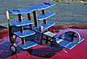
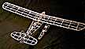

Jason McGuire's Hangar
| For those who haven't had the pleasure of viewing them in person, here are a few of Jason's models for your enjoyment. We will try to bring you more in the future. There must be some sort of energy vortex near his drawing board and workbench. Time after time, he has arrived at a flying session with a delightful new model that has flown right off the board. Loaded with charisma, his models are blessed with a light hand, and fly seemingly forever. |
Click any image for larger views as well as building and flying notes.
 |
 |  |
|
| Ryan ST Nickel Scale |
Quadruplane Sport Flyer |
Tiny Twerp 4" span |
Twerp 2.34 and glider |
|  |  |
||
| Aeronca K Seaplane |
Daddy-O Embryo Racer |
Jodel Cockpit Micro-X Kit |
Fokker D-VII Herr laser kit |
| XE-5 Prototype Dick Baxter Design |
Baxter Akros 8" span |
Taibi Powerhouse Mini Electric |
Baby Lightweight |
return to
Copyright 1998, Thayer Syme. All rights reserved